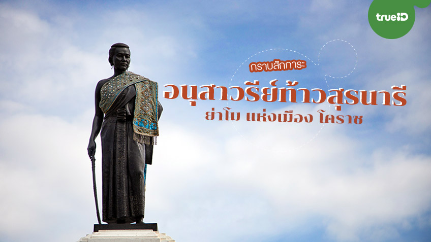

สถานที่ท่องเที่ยว

อนุสาวรีย์ท้าวสุรนารี หรือ ย่าโม
เป็นศูนย์รวมจิตใจและแลนด์มาร์คสำคัญที่สุดของชาวจังหวัดนครราชสีมา
ตั้งอยู่ใจกลางเมือง ณ ประตูชุมพล
เพื่อรำลึกถึงวีรกรรมการกอบกู้อิสรภาพจากกองทัพเจ้าอนุวงศ์เมื่อปี พ.ศ. 2369